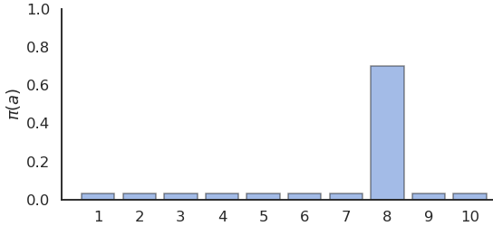
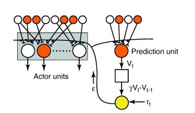
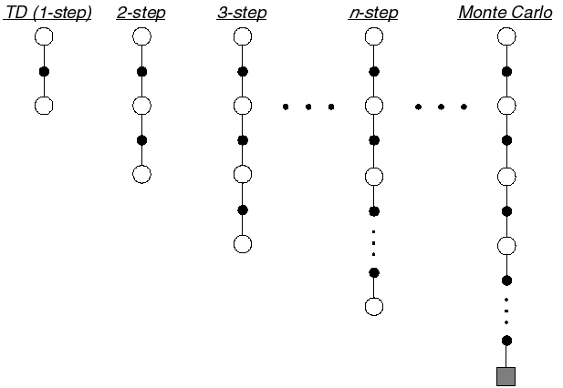
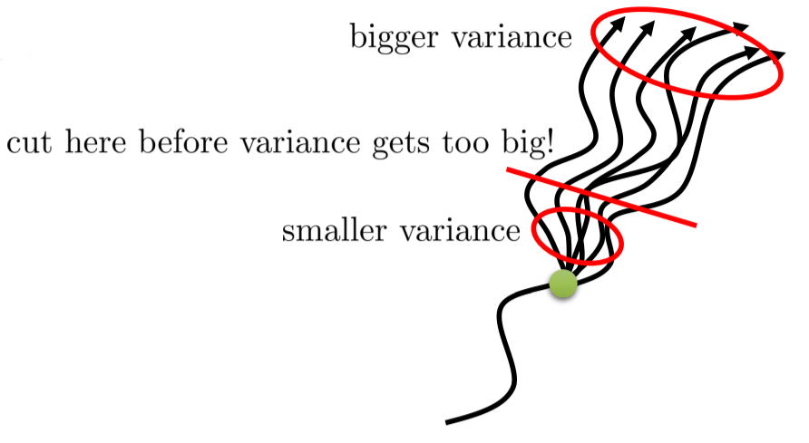
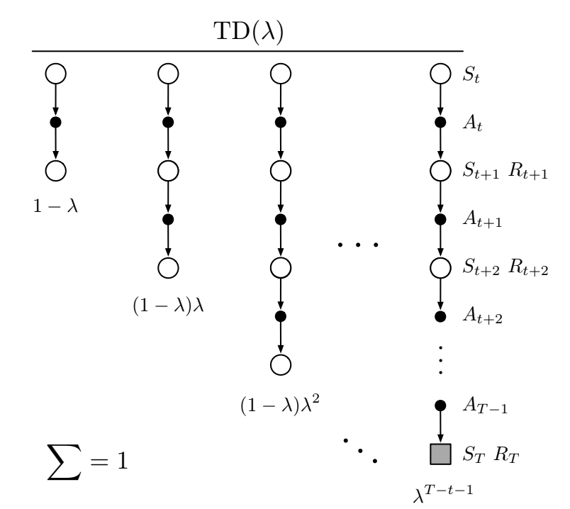
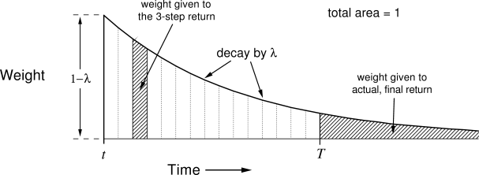
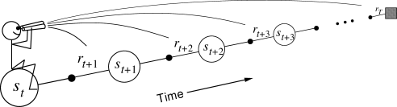
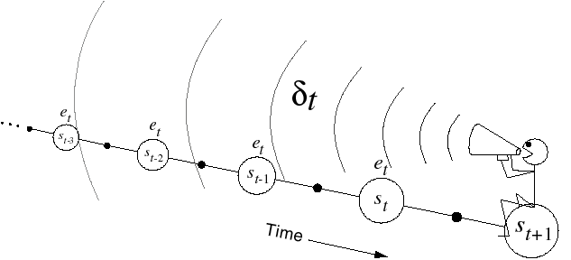
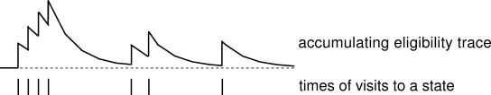

Temporal Difference
TD algorithms allow learning from single transitions
1 - Temporal Difference Learning
Temporal-Difference (TD) learning
- MC methods wait until the end of the episode to compute the obtained return:
\[ V(s_t) \leftarrow V(s_t) + \alpha (R_t - V(s_t)) \]
- If the episode is very long, learning might be very slow. If the task is continuing, it is impossible.
- Considering that the return at time \(t\) is the immediate reward plus the return in the next step:
\[ R_t = r_{t+1} + \gamma \, R_{t+1} \]
we could replace \(R_{t+1}\) by an estimate, which is the value of the next state:
\[V^\pi(s_{t+1}) = \mathbb{E}_\pi [R_{t+1} | s_{t+1}=s]\]
- This gives us:
\[R_t \approx r_{t+1} + \gamma \, V^\pi(s_{t+1})\]
Temporal-Difference (TD) learning
- Temporal-Difference (TD) methods simply replace the actual return by an estimation in the update rule:
\[ V(s_t) \leftarrow V(s_t) + \alpha \, (r_{t+1} + \gamma \, V(s_{t+1}) - V(s_t)) \]
where \(r_{t+1} + \gamma\, V(s_{t+1})\) is a sampled estimate of the return.
- The quantity
\[\delta_t = r_{t+1} + \gamma \, V(s_{t+1}) - V(s_t)\]
is called equivalently the reward prediction error (RPE), the TD error or the advantage of the action \(a_t\).
It is the difference between:
the estimated return in state \(s_t\): \(V(s_t)\).
the actual return \(r_{t+1} + \gamma \, V(s_{t+1})\), computed with an estimation.
If \(\delta_t > 0\), it means that we received more reward \(r_{t+1}\) than expected, or that we arrived in a state \(s_{t+1}\) better than expected. We should increase the value of \(s_t\) as we underestimate it.
If \(\delta_t < 0\), we should decrease the value of \(s_t\) as we overestimate it.
TD policy evaluation TD(0)
- The learning procedure in TD is possible after each transition: the backup diagram is limited to only one state and its follower.
Backup diagram of TD(0)
while True:
Start from an initial state \(s_0\).
foreach step \(t\) of the episode:
Select \(a_t\) using the current policy \(\pi\) in state \(s_t\).
Apply \(a_t\), observe \(r_{t+1}\) and \(s_{t+1}\).
Compute the TD error:
\[\delta_t = r_{t+1} + \gamma \, V(s_{t+1}) - V(s_t)\]
- Update the state-value function of \(s_t\):
\[ V(s_t) \leftarrow V(s_t) + \alpha \, \delta_t \]
- if \(s_{t+1}\) is terminal: break
- TD learns from experience in a fully incremental manner. It does not need to wait until the end of an episode. It is therefore possible to learn continuing tasks.
Bias-variance trade-off
- The TD error is used to evaluate the policy:
\[ V(s_t) \leftarrow V(s_t) + \alpha \, (r_{t+1} + \gamma \, V(s_{t+1}) - V(s_t)) = V(s_t) + \alpha \, \delta_t \]
- If \(\alpha\) is small enough, the estimates converge to:
\[V^\pi(s) = \mathbb{E}_\pi [r(s, a, s') + \gamma \, V^\pi(s')]\]
By using an estimate of the return \(R_t\) instead of directly the return as in MC,
we increase the bias (estimates are always wrong, especially at the beginning of learning)
but we reduce the variance: only \(r(s, a, s')\) is stochastic, not the value function \(V^\pi\).
We can therefore expect less optimal solutions, but we will also need less samples.
better sample efficiency than MC.
worse convergence (suboptimal).

Exploration-exploitation problem
- Q-values can be estimated in the same way:
\[ Q(s_t, a_t) \leftarrow Q(s_t, a_t) + \alpha \, (r_{t+1} + \gamma \, Q(s_{t+1}, a_{t+1}) - Q(s_t, a_t)) \]
Like for MC, the exploration/exploitation trade-off has to be managed: what is the next action \(a_{t+1}\)?
There are therefore two classes of TD control algorithms:
on-policy (SARSA)
off-policy (Q-learning).

SARSA: On-policy TD control
- SARSA (state-action-reward-state-action) updates the value of a state-action pair by using the predicted value of the next state-action pair according to the current policy.

- When arriving in \(s_{t+1}\) from \((s_t, a_t)\), we already sample the next action:
\[a_{t+1} \sim \pi(s_{t+1}, a)\]
- We can now update the value of \((s_t, a_t)\):
\[ Q(s_t, a_t) \leftarrow Q(s_t, a_t) + \alpha \, (r_{t+1} + \gamma \, Q(s_{t+1}, a_{t+1}) - Q(s_t, a_t)) \]
The next action \(a_{t+1}\) will have to be executed next: SARSA is on-policy. You cannot change your mind and execute another \(a_{t+1}\).
The learned policy must be \(\epsilon\)-soft (stochastic) to ensure exploration.
SARSA converges to the optimal policy if \(\alpha\) is small enough and if \(\epsilon\) (or \(\tau\)) slowly decreases to 0.
SARSA: On-policy TD control
while True:
Start from an initial state \(s_0\) and select \(a_0\) using the current policy \(\pi\).
foreach step \(t\) of the episode:
Apply \(a_{t}\), observe \(r_{t+1}\) and \(s_{t+1}\).
Select \(a_{t+1}\) using the current stochastic policy \(\pi\).
Update the action-value function of \((s_t, a_t)\):
\[ Q(s_t, a_t) \leftarrow Q(s_t, a_t) + \alpha \, (r_{t+1} + \gamma \, Q(s_{t+1}, a_{t+1}) - Q(s_t, a_t)) \]
- Improve the stochastic policy, e.g:
\[ \pi(s_t, a) = \begin{cases} 1 - \epsilon \; \text{if} \; a = \text{argmax} \, Q(s_t, a) \\ \frac{\epsilon}{|\mathcal{A}(s_t) -1|} \; \text{otherwise.} \\ \end{cases} \]
- if \(s_{t+1}\) is terminal: break
Q-learning: Off-policy TD control
- SARSA estimates the return using the next action sampled from the learned policy.
\[ R_t \approx r_{t+1} + \gamma \, Q^\pi(s_{t+1}, a_{t+1}) \]
- As the learned policy is stochastic, the Q-value of the next action will have a high variance.

- The greedy action in the next state, the one with the highest Q-value, will not change from sample to sample: it can provide a more stable (less variance) estimate of the return:
\[ R_t \approx r_{t+1} + \gamma \, \max_a Q^\pi(s_{t+1}, a_{t+1}) \approx r_{t+1} + \gamma \, \max_a Q^*(s_{t+1}, a_{t+1}) \]
- We implicitly use the Bellman optimality equation.
Q-learning: Off-policy TD control
- Q-learning approximates the optimal action-value function \(Q^*\) independently of the current policy, using the greedy action in the next state.
\[Q(s_t, a_t) \leftarrow Q(s_t, a_t) + \alpha \, (r_{t+1} + \gamma \, \max_a Q(s_{t+1}, a) - Q(s_t, a_t))\]
The next action \(a_{t+1}\) can be generated by a behavior policy: Q-learning is off-policy.
The learned policy can be deterministic.
The behavior policy can be an \(\epsilon\)-soft policy derived from \(Q\) or expert knowledge.
The behavior policy only needs to visit all state-action pairs during learning to ensure optimality.
Q-learning: Off-policy TD control
while True:
Start from an initial state \(s_0\).
foreach step \(t\) of the episode:
Select \(a_{t}\) using the behavior policy \(b\) (e.g. derived from \(\pi\)).
Apply \(a_t\), observe \(r_{t+1}\) and \(s_{t+1}\).
Update the action-value function of \((s_t, a_t)\):
\[Q(s_t, a_t) \leftarrow Q(s_t, a_t) + \alpha \, (r_{t+1} + \gamma \, \max_a Q(s_{t+1}, a) - Q(s_t, a_t))\]
- Improve greedily the learned policy:
\[\pi(s_t, a) = \begin{cases} 1\; \text{if} \; a = \text{argmax} \, Q(s_t, a) \\ 0 \; \text{otherwise.} \\ \end{cases} \]
- if \(s_{t+1}\) is terminal: break
No need for importance sampling in Q-learning
- In off-policy Monte Carlo, Q-values are estimated using the return of the rest of the episode on average:
\[Q^\pi(s, a) = \mathbb{E}_{\tau \sim \rho_b}[\rho_{0:T-1} \, R(\tau) | s_0 = s, a_0=a]\]
As the rest of the episode is generated by \(b\), we need to correct the returns using the importance sampling weight.
In Q-learning, Q-values are estimated using other estimates:
\[ Q^\pi(s, a) = \mathbb{E}_{s_t \sim \rho_b, a_t \sim b}[ r_{t+1} + \gamma \, \max_a Q^\pi(s_{t+1}, a) | s_t = s, a_t=a] \]
As we only sample transitions using \(b\) and not episodes, there is no need to correct the returns:
The returns use estimates \(Q^\pi\), which depend on \(\pi\) and not \(b\).
The immediate reward \(r_{t+1}\) is stochastic, but is the same whether you sample \(a_t\) from \(\pi\) or from \(b\).
Temporal Difference learning
Temporal Difference allow to learn Q-values from single transitions instead of complete episodes.
MC methods can only be applied to episodic problems, while TD works for continuing tasks.
MC and TD methods are model-free: you do not need to know anything about the environment (\(p(s' |s, a)\) and \(r(s, a, s')\)) to learn.
The exploration-exploitation dilemma must be dealt with:
- On-policy TD (SARSA) follows the learned stochastic policy.
\[ Q(s, a) \leftarrow Q(s, a) + \alpha \, (r(s, a, s') + \gamma \, Q(s', a') - Q(s, a)) \]
- Off-policy TD (Q-learning) follows a behavior policy and learns a deterministic policy.
\[ Q(s, a) \leftarrow Q(s, a) + \alpha \, (r(s, a, s') + \gamma \, \max_a Q(s', a) - Q(s, a)) \]
TD uses bootstrapping like DP: it uses other estimates to update one estimate.
Q-learning is the go-to method in tabular RL.
Optimal control with Q-learning
{{< youtube XiigTGKZfks >}}2 - Actor-critic methods
Actor-critic methods
- The TD error after each transition \((s_t, a_t, r_{t+1}, s_{t+1})\):
\[ \delta_t = r_{t+1} + \gamma V(s_{t+1}) - V(s_t)\]
tells us how good the action \(a_t\) was compared to our expectation \(V(s_t)\).
When the advantage \(\delta_t > 0\), this means that the action lead to a better reward or a better state than what was expected by \(V(s_t)\), which is a good surprise, so the action should be reinforced (selected again) and the value of that state increased.
When \(\delta_t < 0\), this means that the previous estimation of \((s_t, a_t)\) was too high (bad surprise), so the action should be avoided in the future and the value of the state reduced.
Actor-critic methods

Actor-critic methods are TD methods that have a separate memory structure to explicitly represent the policy and the value function.
The policy \(\pi\) is implemented by the actor, because it is used to select actions.
The estimated values \(V(s)\) are implemented by the critic, because it criticizes the actions made by the actor.
- The critic computes the TD error or 1-step advantage:
\[\delta_t = r_{t+1} + \gamma \, V(s_{t+1}) - V(s_t)\]
- This scalar signal is the output of the critic and drives learning in both the actor and the critic.
Actor-critic methods
- TD error after each transition:
\[ \delta_t = r_{t+1} + \gamma V(s_{t+1}) - V(s_t)\]
- The critic is updated using this scalar signal:
\[ V(s_t) \leftarrow V(s_t) + \alpha \, \delta_t\]
- The actor is updated according to this TD error signal. For example a softmax actor over preferences:
\[ \begin{cases} p(s_t, a_t) \leftarrow p(s_t, a_t) + \beta \, \delta_t \\ \\ \pi(s, a) = \dfrac{\exp{p(s, a)}}{\sum_b \exp{p(s, b)}} \\ \end{cases} \]
When \(\delta_t >0\), the preference is increased, so the probability of selecting it again increases.
When \(\delta_t <0\), the preference is decreased, so the probability of selecting it again decreases.
Actor-critic algorithm with preferences
Start in \(s_0\). Initialize the preferences \(p(s,a)\) for each state action pair and the critic \(V(s)\) for each state.
foreach step \(t\):
- Select \(a_t\) using the actor \(\pi\) in state \(s_t\):
\[\pi(s_t, a) = \frac{\exp{p(s, a)}}{\sum_b \exp{p(s, b)}}\]
Apply \(a_t\), observe \(r_{t+1}\) and \(s_{t+1}\).
Compute the TD error in \(s_t\) using the critic:
\[ \delta_t = r_{t+1} + \gamma \, V(s_{t+1}) - V(s_t) \]
- Update the actor:
\[ p(s_t, a_t) \leftarrow p(s_t, a_t) + \beta \, \delta_t \]
- Update the critic:
\[ V(s_t) \leftarrow V(s_t) + \alpha \, \delta_t \]
Actor-critic methods
The advantage of the separation between the actor and the critic is that now the actor can take any form (preferences, linear approximation, deep networks).
It requires minimal computation in order to select the actions, in particular when the action space is huge or even continuous.
It can learn stochastic policies, which is particularly useful in non-Markov problems.

It is obligatory to learn on-policy:
the critic must evaluate the actions taken by the current actor.
the actor must learn from the current critic, not “old” V-values.
3 - Eligibility traces and advantage estimation
Bias-variance trade-off

MC has high variance, zero bias:
Good convergence properties. We are more likely to find the optimal policy.
Not very sensitive to initial estimates.
Very simple to understand and use.
Needs a lot of transitions to converge.
TD has low variance, some bias:
More sample efficient than MC.
TD(0) converges to \(V^\pi(s)\) (but not always with function approximation).
The bias implies that the policy might be suboptimal.
More sensitive to initial values (bootstrapping).
Drawback of learning from single transitions

- When the reward function is sparse (e.g. only at the end of a game), only the last action, leading to that reward, will be updated the first time in TD.
\[ Q(s, a) \leftarrow Q(s, a) + \alpha \, (r(s, a, s') + \gamma \, \max_a Q(s', a) - Q(s, a)) \]
The previous actions, which were equally important in obtaining the reward, will only be updated the next time they are visited.
This makes learning very slow: if the path to the reward has \(n\) steps, you will need to repeat the same episode at least \(n\) times to learn the Q-value of the first action.
n-step advantage

Optimally, we would like a trade-off between:
TD (only one state/action is updated each time, small variance but significant bias)
Monte Carlo (all states/actions in an episode are updated, no bias but huge variance).
In n-step TD prediction, the next \(n\) rewards are used to estimate the return, the rest is approximated.
- The n-step return is the discounted sum of the \(n\) next rewards is computed as in MC plus the predicted value at step \(t+n\) which replaces the rest as in TD.
\[ R^n_t = \sum_{k=0}^{n-1} \gamma^{k} \, r_{t+k+1} + \gamma^n \, V(s_{t+n}) \]
- We can update the value of the state with this n-step return:
\[ V(s_t) \leftarrow V(s_t) + \alpha \, (R^n_t - V (s_t)) \]
n-step advantage
- The n-step advantage at time \(t\) is:
\[ A^n_t = \sum_{k=0}^{n-1} \gamma^{k} \, r_{t+k+1} + \gamma^n \, V(s_{t+n}) - V (s_t) \]
- It is easy to check that the TD error is the 1-step advantage:
\[ \delta_t = A^1_t = r_{t+1} + \gamma \, V(s_{t+1}) - V(s_t) \]

As you use more “real” rewards, you reduce the bias of Q-learning.
As you use estimates for the rest of the episode, you reduce the variance of MC methods.
But how to choose \(n\)?
Eligibility traces : forward view
- One solution is to average the n-step returns, using a discount factor \(\lambda\) :
\[R^\lambda_t = (1 - \lambda) \, \sum_{n=1}^\infty \lambda^{n-1} \, R^n_t\]
- The term \(1- \lambda\) is there to ensure that the coefficients \(\lambda^{n-1}\) sum to one.
\[\sum_{n=1}^\infty \lambda^{n-1} = \dfrac{1}{1 - \lambda}\]
Each reward \(r_{t+k+1}\) will count multiple times in the \(\lambda\)-return. Distant rewards are discounted by \(\lambda^k\) in addition to \(\gamma^k\).
Large n-step returns (MC) should not have as much importance as small ones (TD), as they have a high variance.


Eligibility traces : forward view
- To understand the role of \(\lambda\), let’s split the infinite sum w.r.t the end of the episode at time \(T\). n-step returns with \(n \geq T\) all have a MC return of \(R_t\):
\[R^\lambda_t = (1 - \lambda) \, \sum_{n=1}^{T-t-1} \lambda^{n-1} \, R^n_t + \lambda^{T-t-1} \, R_t\]
\(\lambda\) controls the bias-variance trade-off:
If \(\lambda=0\), the \(\lambda\)-return is equal to \(R^1_t = r_{t+1} + \gamma \, V(s_{t+1})\), i.e. TD: high bias, low variance.
If \(\lambda=1\), the \(\lambda\)-return is equal to \(R_t = \sum_{k=0}^{\infty} \gamma^{k} \, r_{t+k+1}\), i.e. MC: low bias, high variance.
This forward view of eligibility traces implies to look at all future rewards until the end of the episode to perform a value update. This prevents online learning using single transitions.

Eligibility traces : backward view


- Another view on eligibility traces is that the TD reward prediction error at time \(t\) is sent backwards in time:
\[ \delta_t = r_{t+1} + \gamma V(s_{t+1}) - V(s_t) \]
- Every state \(s\) previously visited during the episode will be updated proportionally to the current TD error and an eligibility trace \(e_t(s)\):
\[ V(s) \leftarrow V(s) + \alpha \, \delta_t \, e_t(s) \]
- The eligibility trace defines since how long the state was visited:
\[ e_t(s) = \begin{cases} \gamma \, \lambda \, e_{t-1}(s) \qquad\qquad \text{if} \quad s \neq s_t \\ e_{t-1}(s) + 1 \qquad \text{if} \quad s = s_t \\ \end{cases} \]
- \(\lambda\) defines how important is a future TD error for the current state.
TD(\(\lambda\)) algorithm: policy evaluation
foreach step \(t\) of the episode:
Select \(a_t\) using the current policy \(\pi\) in state \(s_t\), observe \(r_{t+1}\) and \(s_{t+1}\).
Compute the TD error in \(s_t\):
\[ \delta_t = r_{t+1} + \gamma \, V(s_{t+1}) - V(s_t) \]
- Increment the trace of \(s_t\):
\[ e_{t+1}(s_t) = e_t(s_t) + 1 \]
foreach state \(s \in [s_o, \ldots, s_t]\) in the episode:
- Update the state value function:
\[ V(s) \leftarrow V(s) + \alpha \, \delta_t \, e_t(s) \]
- Decay the eligibility trace:
\[ e_{t+1}(s) = \lambda \, \gamma \, e_t(s) \]
if \(s_{t+1}\) is terminal: break
Eligibility traces
The backward view of eligibility traces can be applied on single transitions, given we know the history of visited states and maintain a trace for each of them.
Eligibility traces are a very useful way to speed learning up in TD methods and control the bias/variance trade-off.
This modification can be applied to all TD methods: TD(\(\lambda\)) for states, SARSA(\(\lambda\)) and Q(\(\lambda\)) for actions.
The main drawback is that we need to keep a trace for ALL possible state-action pairs: memory consumption. Clever programming can limit this issue.
The value of \(\lambda\) has to be carefully chosen for the problem: perhaps initial actions are random and should not be reinforced.
If your problem is not strictly Markov (POMDP), eligibility traces can help as they update the history!